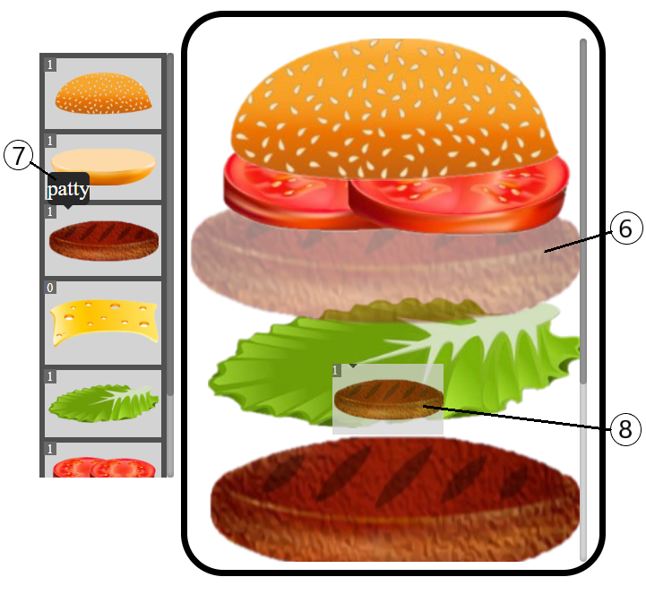

User Interactions Showcase
Diagram Details

Details:
- ① The sidebar containing all sidebar components.
- ② The diagram containing the diagram layers.
- ③ The occurence count of that particular component in the diagram.
- ④ The side menu that appears beside the layer the mouse hovers over. For vertical diagrams, the buttons from top to bottom are: shift up, shift down, remove. For horizontal diagrams, the buttons from left to right are: shift left, shift right, remove.
- ⑤ A layer in the diagram.
- ⑥ A translucent image of the dragged component to show where the component would be dropped.
- ⑦ Name of the sidebar component the mouse hovers over.
- ⑧ The component currently being dragged.
Add Layers
For modifiable diagrams, users are able to add components from the sidebar into the diagram. To do this, users have to click, hold, and drag the component they want from the sidebar to the diagram. While dragging the component over the diagram, the layers in the diagram will spread out and a translucent image of the dragged component will appear where the component is expected to be dropped at. Dropping the dragged component in the diagram will add that component to the diagram in the location that the translucent image was.
Remove Layers
For modifiable diagrams, users are able to remove components from the diagram. To do this, users can click, hold, and drag the layer they want to remove into the sidebar. Alternatively, users can click the "X" button in the side menu that appears when the user's mouse hovers over a layer.
Reorder Layers
For modifiable diagrams, users can reorder the layers in the diagram. To do this, users can click, hold, and drag a layer and drop it in another location in the diagram. While dragging the layer over the diagram, the layers in the diagram will spread out and a translucent image of the dragged layer will appear where the layer is expected to be dropped at. Dropping the dragged layer in the diagram will move that layer to the location that the translucent image was. Alternatively, users can move a layer up or down by one spot by clicking the arrow buttons in the side menu that appears when the user's mouse hovers over a layer.
Popup Information
Users can view additional information on a component by clicking on the component in either the diagram or the sidebar. This additional information appears in the form of a popup window. Users can open multiple popup windows and reposition the windows by dragging it around the screen.